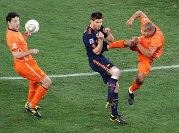

Ro Taldo
Stade Pierre Mauroy
261 Boulevard de Tournai
59650 Villeneuve-d'Ascq
Mes dernières expériences:
- 17e journée: Equipo 2 - 1 RH Fever (Kerbrat , Moutinho - Rotaldo )
- 17e journée: Tours FC 2 - 2 PaixDieuTeam (Draxler , Mbappe - Keita , Rotaldo )
- 17e journée: Remuntada 2 - 0 JMontreMaBiteSurSNAP (Fekir , Rotaldo )
- 16e journée: JMontreMaBiteSurSNAP 3 - 2 Tours FC (Glik , Thauvin, Rotaldo - Mbappe , Rotaldo )
- 17e journée: Equipo 2 - 4 Les enfants de la loose (Kerbrat , Moutinho - Sorbon , Di Maria , El Ghazi , Rotaldo )
Mon parcours:
- Licence "Comment tacler" à Furiani par Cyril Rool
- Master "Visionnage des plus beaux matchs de Bordeaux sous Ricardo"
- Stage de 6 mois au LOSC auprès de René Girard
Mes Hobbies:
- Chambrer les lundi matin à partir de 7h
- Visionnage de vidéos Youtube comme celle-ci.
- Les grosses affiches de L1 comme Amiens - Troyes